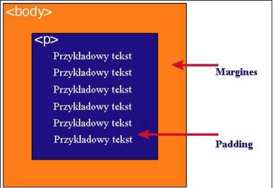

| Zawartość | Opis |
|---|---|
| content | zawartość elementu (np.: tekst, obrazek) |
| padding | otaczające marginesy wewnętrzne, odstęp między obramowaniem i zawartością elementu |
| border | obramowania wokół zawartości elementu, ma styl i kolor. |
| margin | marginesy wokół ramki (margines zewnętrzny). Jest to pusty obszar wokół ramki, który nie ma koloru tła i jest przeźroczysty. |
Padding określa przestrzeń wokół danego elementu, np: < p> lub < div>, natomiast margines przestrzeń pomiędzy elementami.

Jak widać na rysunku, padding oznaczony jest kolorem niebieskim. Określa on wielkość przestrzeni wokół elementu < p>.
Element ten posiada również margines zaznaczony kolorem pomarańczowym. Jest to odległość od brzegu elementu < body>.